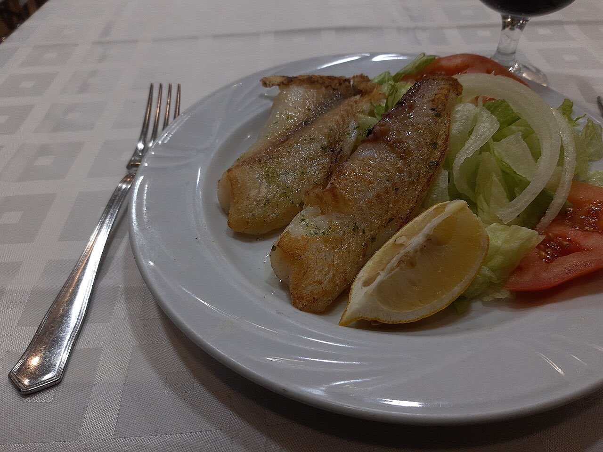
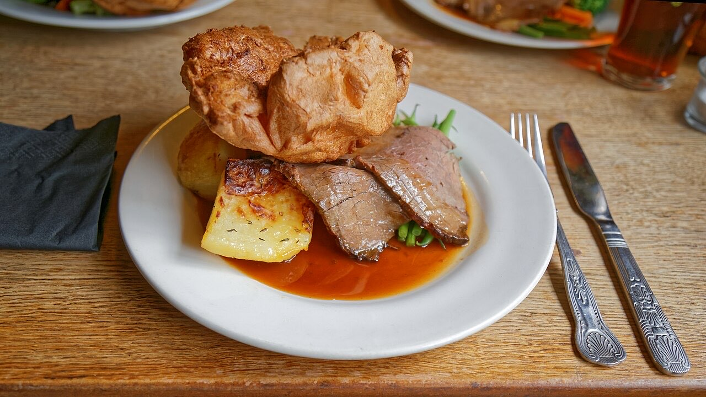
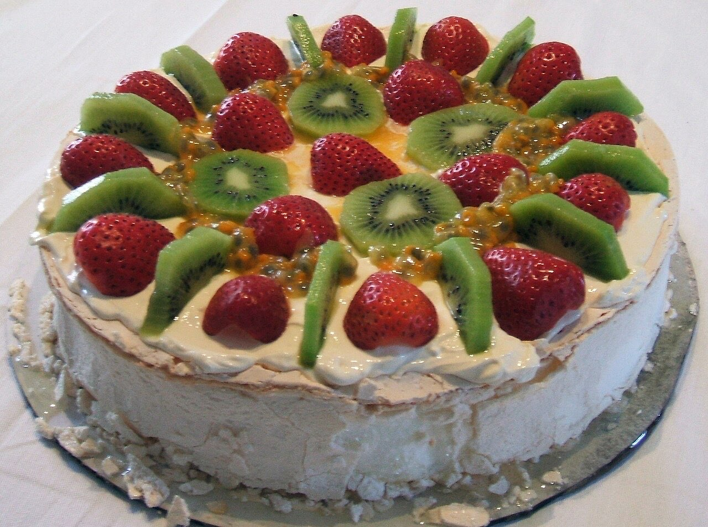

Restaurante · Ponte
Almoços e jantares sem pressa em Ponte
Leia o QR na mesa e envie o pedido do telemóvel.
Almoços e jantares com amigos, família ou colegas.
R. Parque Industrial de Ponte. Veja como chegar.
O Restaurante Neta do Rei fica no Parque Industrial de Ponte, em Ponte, Guimarães. Uma mesa para almoços e jantares sem pressa, com o pedido feito pelo telemóvel.



Fotografias ilustrativas — no site final usamos as vossas.
Novo · Pedidos por QR code
Menos espera nas horas de ponta, menos enganos nos pedidos e a equipa livre para servir.
Pedido de reserva
Escolha o dia e a hora — o pedido chega por WhatsApp e confirmamos logo.
↑ Assim chegaria a mensagem ao vosso WhatsApp. (Nesta demonstração nada é enviado.)
Onde estamos
Proposta para Restaurante Neta do Rei
Esta página foi feita de propósito para Restaurante Neta do Rei por João Machado, programador web aqui de Guimarães. Inclui:
Eu trato do alojamento e da manutenção. Sem compromisso.